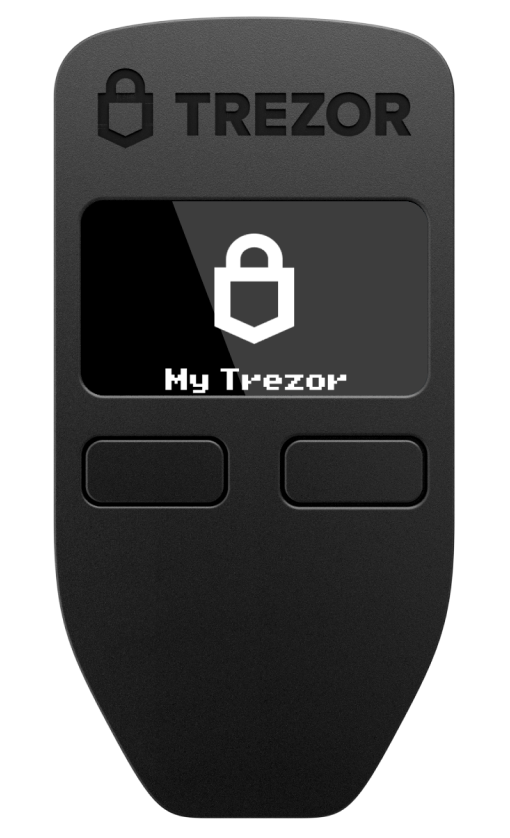

Wallets

¿Qué es una wallet?
Los wallet de criptomonedas son un tipo de wallet digital muy diferente de los demás: no contienen la divisa como tal, sino que te otorgan acceso a las contraseñas que necesitas para utilizarlas. Existen varios tipos de wallet de criptomonedas, tanto digitales como físicos, parecidos a un pendrive. Los wallet de criptomonedas son realmente prácticos, ya que te permiten gestionar tus criptomonedas donde y cuando quieras, así como hacer compras en los negocios que acepten criptomonedas.
El término wallet hace referencia a una cartera, billetera o monedero virtual en el que podemos gestionar nuestros activos criptográficos. Es un software o hardware diseñado exclusivamente para almacenar y gestionar las claves públicas y claves privadas de nuestras criptomonedas.
Funcionamiento
Para un usuario, la creación de una dirección es tan simple como descargar una wallet. Pero, ¿qué pasa por detrás? El proceso para obtener una dirección de bitcoin puede variar de wallet a wallet, a continuación vamos a describir el estándar impuesto por el Bitcoin Improvement Proposal 39 (BIP-39).
El primer paso para crear una dirección de bitcoin es obtener un número binario aleatorio. Este se va a separar en 12 números distintos y cada uno va a corresponder a una lista preestablecida de 2048 palabras. A esta se le llama seed phrase o frase de recuperación, y se ve así:
witch collapse practice feed shame open despair creek road again ice least
La seed phrase se va a usar para generar la llave privada, la cual generalmente se suele mostrar en formato hexadecimal.
Quedaría algo como esto:
1E99423A4ED27608A15A2616A2B0E9E52CED330AC530EDCC32C8FFC6A526AEDD
Esta llave privada se pasa por un algoritmo de curvas elípticas para obtener la llave pública. El proceso para pasar de llave privada a pública es sencillo, pero lo opuesto es casi imposible. Por eso es seguro compartir nuestra llave pública sin miedo a que nos puedan robar los fondos.
Una vez obtenida la llave pública, se pasa por una función hash para finalmente obtener la dirección. Entonces, aunque a veces se usen como sinónimos, la llave pública no es lo mismo que la dirección.
Ejemplo de una dirección:
1BvBMSEYstWetqTFn5Au4m4GFg7xJaNVN2
Hot Wallets
Los Hot Wallets son monederos para criptomonedas que almacen criptomonedas, envian y reciben activos digitales (y otro tipo de operaciones) que se mantienen en permanente conexión con Internet.
Su principal utilidad es que ofrece un cómodo y rápido acceso a los fondos debido a su constante conexión a internet.
Caracteristicas:
- Pueden ser de dos tipos: un servicio web que facilite el acceso a las criptomonedas o un software de descarga gratuita para el ordenador o smartphone.
- En caso de que sean monederos donde tú gestionas las claves, deberás preocuparte tú mismo por la seguridad.
- Generalmente son monederos gratuitos.
- Son más propensas a sufrir de ataques informáticos. Esto se debe a que están conectadas a Internet todo el tiempo y por ello, mantienen un nivel de riesgo más alto de robos y piratería.
Cold Wallet
Las cold wallets se refieren a cualquier billetera de criptomonedas que no está conectada a Internet. Normalmente este tipo de billeteras son más seguras, pero no aceptan tantas criptomonedas como muchas de las hot wallets.
Existen diferentes tipos de cold wallets, entre ellas están las billeteras de hardware (hardware wallets), las billeteras de papel (paper wallets), las billeteras de computadora (desktop wallets), las billeteras para teléfonos celulares (mobile wallets) y las billeteras online (web wallets).
Hay 2 entre ellas que se destacan, las hardware wallets y las paper wallets.
Hardware Wallet: este suele ser un dispositivo USB que permite el almacenamiento de claves privadas. Para conservar las criptomonedas, deberás enviarlas desde una hot wallet directamente a la dirección pública de la hardware wallet.
Si alguien quiere enviar criptomonedas desde una hardware wallet a un exchange o a un amigo, la billetera deberá estar conectada a Internet, utilizando el software indicado en cada caso. Después, la transacción solo debe firmarse con la clave privada personal. Es por esto que si hablamos de la versión cold, las transacciones también deben firmarse offline. Una de las hardware wallets más populares es Trezor.
Paper Wallet: estas son billeteras de papel que contienen la dirección de la wallet y una clave privada. No se puede acceder a las criptomonedas sin esa clave privada. Por lo tanto, esta wallet debe mantenerse a salvo en un lugar donde no se pueda encontrar fácilmente. Para enviar criptomonedas desde la paper wallet, se importarán a una hot wallet, escaneando las claves privadas.
Caracteristicas:
- Las cold walllets al no mantenerse en línea con las redes blockchain e Internet, ofrecen protección y seguridad contra los malwares y otros software maliciosos.
- Las billeterias frías nos permiten almacenar grandes cantidades de dinero de manera segura y eficiente.
- Las cold wallets no requieren de terceros para el manejo de las claves y gestión de las criptomonedas; como sí ocurre con las wallets online o hot wallets.
- Las Cold wallets poseen medios de comunicación limitados para maximizar la seguridad que ofrecen.
- Generalmente permiten añadir una capa de seguridad extra por medio de la configuración de un PIN que impide que un tercero haga uso del dispositivo si llega a tener acceso a el.
- Las claves son generadas y mantenidas dentro del mismo dispositivo donde se usa la wallet. Nunca salen de dicho dispositivo, por lo que se mantienen seguras y protegidas.
- Las cold wallets son compatibles con la mayoría de los sistemas operativos disponibles.
- Tienen la capacidad de generar una semilla que nos permite restaurar las claves y recuperar los fondos.
Comparación
| Caracteristicas | Hot Wallets | Cold Wallets |
|---|---|---|
| Diferencia Principal | Permanecen conectadas a internet. | No necesitan mantenerse conectados permanentemente a internet. |
| Precio | Gratuitas o de pago. | De pago. |
| Ventajas | Son fáciles de configurar y utilizar. Son convenientes para acceder a fondos para operar, ya que ya están conectadas a Internet y son libres. | Las billeterias frías nos permiten almacenar grandes cantidades de dinero de manera segura y eficiente. |
| Desventajas | Está más expuesta ya que está en internet. | El robo, extravio, o deterioramiento fisico. |